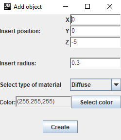
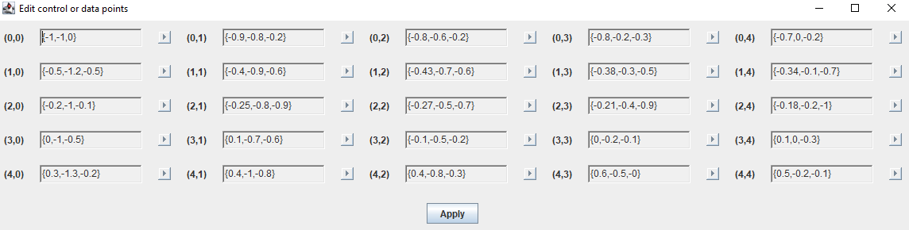
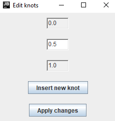
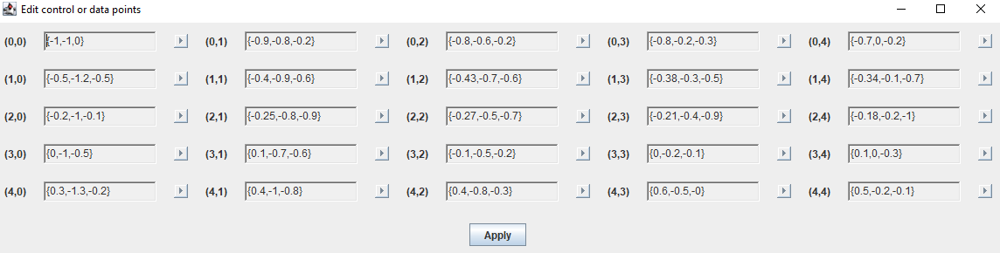
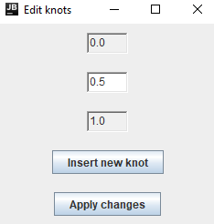
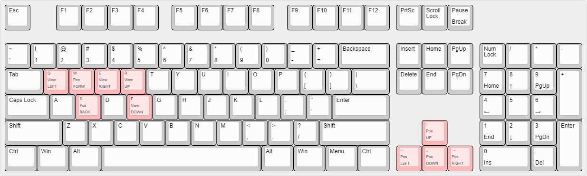

Manuale utente
Avviando il programma viene visualizzata una finestra contenente una scena vuota ed un menù. Attraverso il menù è possibile- Salvare l'immagine corrente, specificando il formato del file e la risoluzione.
- Cambiare le impostazioni del programma, in particolare è possibile:
- Cambiare la risoluzione
- Attivare la simulazione dell'illuminazione diffusa indiretta, specificando anche il numero
di raggi utilizzati per "campionare" l'illuminazione indiretta intorno a ciascun punto.
Aumentando il numero di raggi è possibile ridurre il rumore dell'immagine, aumentando però il costo computazionale.
NOTA:questa modalità rallenta pesantemente il processo di rendering, se ne sconsiglia quindi attualmente l'utilizzo se non per scene molto semplici. - Cambiare il massimo livello di "profondità" che può essere raggiunto dal calcolo ricorsivo per l'illuminazione (rilevante solo per oggetti che hanno una componente di riflessione o se viene simulata l'illuminazione indiretta).
- Modificare la scena, aggiungendo oggetti o fonti luminose, oppure modificando o rimuovendo quelli esistenti.
Gestione oggetti
Ogni oggetto viene inizialmente creato rispetto al sistema di riferimento "centrale", ovvero l'usuale sistema di riferimento cartesiano destrorso. La camera (il punto di vista) è posizionata nell'origine di tale sistema e orientata nella direzione opposta all'asse \(z\). Per ogni oggetto, è possibile specificare una trasformazione affine per ruotarlo, espanderlo o traslarlo all'interno della scena. Sono supportate cinque tipologie di oggetti:
- Sfere
- Parallelepipedi
- Piani
- Superfici di Bézier di bigrado \((3,3)\)
- Superfici B-Spline di bigrado arbitrario
- Per le superfici di Bézier: la Utah teapot, modello notoriamente utilizzato come test nei programmi di rendering 3D, ottenuta tramite incollamento di patch di Bézier.
- Per l'interpolazione tramite B-Spline: una "ciambella aperta"
-
Diffuse (perfettamente opaco)
- Permette di specificare il colore
-
Phong (opaco con componente speculare)
- Permette di specificare il colore
-
Mirror-like (specchio)
- Non permette di specificare proprietà aggiuntive
-
Transparent (trasparente)
- Permette di specificare l'indice di rifrazione
Gestione fonti luminose
Come per gli oggetti, è possibile aggiungere, rimuovere o modificare fonti luminose. Sono disponibili due tipi di fonti luminose:- Point light (luci puntiformi): determinate unicamente dalla posizione.
- Distant light (luci distanti): determinate unicamente dalla direzione.
Creare superfici B-Spline
 

Tutte le superfici B-Spline generate dal programma sono superfici clamped, ovvero passano per i punti di controllo
alle estremità.
È possibile personalizzare una superficie B-Spline agendo su tre diversi aspetti:


Tutte le superfici B-Spline generate dal programma sono superfici clamped, ovvero passano per i punti di controllo
alle estremità.
È possibile personalizzare una superficie B-Spline agendo su tre diversi aspetti:
- Il grado della superficie nelle due direzioni. Nel caso delle superfici B-Spline il grado non è legato al numero di punti di controllo, tuttavia è comunque limitato dal fatto che dev'essere sempre minore del numero di punti di controllo (nella direzione corrispondente). Per questo motivo, incrementare il grado oltre un certo numero obbligherà il programma ad incrementare il numero di punti di controllo. Per incrementare il numero di punti di controllo evitando di alterare eccessivamente l'aspetto della curva, si è deciso di far sì che il nuovo punto venga generato automaticamente inserendo un nuovo nodo, il cui valore viene chiesto all'utente. In ogni caso, incrementare il grado della curva causerà un "reset" del vettore dei nodi in quella direzione, per cui il valore inserito serve solo avere una forma limitata di controllo su quale parte della superficie verrà maggiormente alterata.
-
Il vettore dei nodi nelle due direzioni. Il programma limita i nodi ad essere contenuti nell'intervallo \((0,1)\), dove i due estremi
costituiscono, rispettivamente, primo ed ultimo nodo e hanno molteplicità uguale al grado corrispettivo \(+1\)
(necessario per le curve clamped). I nodi interni sono invece modificabili dall'utente ed è possibile anche inserirne di nuovi.
La creazione di nuovi nodi è uno degli strumenti fondamentali per poter sfruttare la proprietà di controllo locale delle curve B-Spline.
NOTA: la creazione di nuovi punti di controllo ("estendere" la superficie) o l'incremento del grado non preservano il vettore dei nodi, che verrà rigenerato in maniera uniforme. - "Estendere" la superficie, aggiungendo nuovi punti di controllo alle estremità. Questa funzione è presente più che altro come comodità, per estendere la superficie direttamente senza dover passare per le altre due opzioni, che possono generare solo punti di controllo all'"interno" della superficie. I nuovi punti vengono generati, di default, nella stessa direzione data dall'ultimo segmento del poligono di controllo della riga/colonna corrispondente.
Interpolazione tramite B-Spline
Attraverso un'interfaccia molto simile a quella per la creazione di superfici B-Spline, è possibile interpolare una griglia di punti nello spazio con una superficie B-Spline.NOTA: una volta generata la superficie interpolante, questa viene gestita dal programma come una normale superficie B-Spline (per eventuali modifiche, quindi, verrano visualizzati i punti di controllo determinati dal processo di interpolazione e non i punti originariamente interpolati).
Muoversi nella scena
Seppur il programma non sia abbastanza efficiente da permettere di muoversi in tempo reale all'interno della scena, è possibile utilizzare dei comandi da tastiera per spostarsi o cambiare la direzione della visuale. Il funzionamento dei comandi da tastiera è illustrato dall'immagine seguente (Pos identifica i comandi che modificano la posizione della camera, View quelli che alterano la direzione della visuale): In seguito ad ogni comando dato, così come accade per le azioni che modificano la scena, verrà visualizzata una progress bar che indica lo stato di completamento del processo di rendering. La percentuale visualizzata si riferisce alla percentuale di immagine che è stata renderizzata e, poichè il tempo di rendering può variare molto da un pixel all'altro, non è quindi effettivamente indicativa del tempo necessario rimanente.